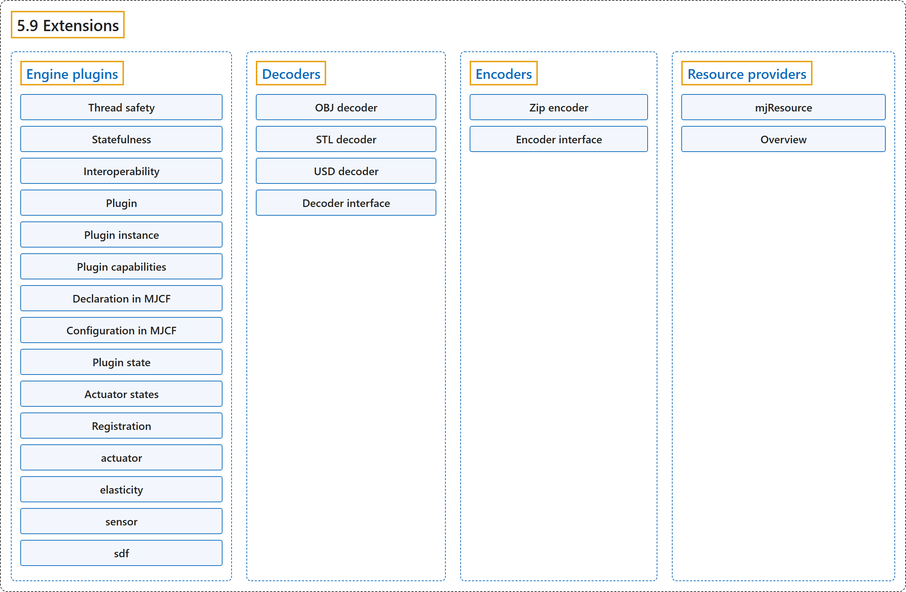

5.9 Extensions
Classification

Glossary
| Term | Definition | 中文翻译 | Source |
|---|---|---|---|
| 5.9 Extensions 扩展 |
(context) "At present, extensibility is provided by via engine plugins, decoders, and resource providers." | （语境）目前，可扩展性由引擎插件、解码器和资源提供者提供。 | Google DeepMind, n.d., "Extensions", para. 1 |
| Engine plugins 引擎插件 |
"Engine plugins allow user-defined logic to be inserted into various parts of MuJoCo’s computational pipeline." | 引擎插件允许把用户定义的逻辑插入 MuJoCo 计算流水线的各个部分。 | Google DeepMind, n.d., "Engine plugins", para. 1 |
| Thread safety 线程安全 |
"Plugin instances (see below) are thread-local, avoiding collisions." | 插件实例（见下文）是线程局部的，避免冲突。 | Google DeepMind, n.d., "Engine plugins", item 1 |
| Statefulness 有状态性 |
"Plugins can be stateful, and their state will be (de)serialized correctly." | 插件可以是有状态的，它们的状态会被正确地序列化和反序列化。 | Google DeepMind, n.d., "Engine plugins", item 2 |
| Interoperability 互操作性 |
"Different plugins can coexist without interference." | 不同的插件可以共存而互不干扰。 | Google DeepMind, n.d., "Engine plugins", item 3 |
| Plugin 插件 |
"A plugin is a collection of functions and static attributes that implement its capabilities, bundled into an mjpPlugin struct." | 插件是实现其功能的一组函数和静态属性，打包在一个 mjpPlugin 结构体中。 | Google DeepMind, n.d., "Engine plugins", para. 4 |
| stateless 无状态 |
"Plugin functions are stateless: they depend only on the arguments passed to them." | 插件函数是无状态的：它们只依赖传给它们的参数。 | Google DeepMind, n.d., "Engine plugins", para. 4 |
| Plugin instance 插件实例 |
"A plugin instance represents the self-contained runtime state that is operated on by the plugin: when the plugin logic is executed, the instance state is passed in by the engine." | 插件实例表示由插件操作的自包含运行时状态：执行插件逻辑时，引擎把实例状态传进去。 | Google DeepMind, n.d., "Engine plugins", para. 5 |
| one-to-one 一对一 |
"In this simplest case, each instance is referenced once in the model." | 在这种最简单的情况下，每个实例在模型中只被引用一次。 | Google DeepMind, n.d., "Engine plugins", item 1 |
| one-to-many 一对多 |
"Alternatively, the behavior of multiple elements can be backed by a single plugin instance." | 或者，多个元素的行为可以由单个插件实例支撑。 | Google DeepMind, n.d., "Engine plugins", item 2 |
| Plugin capabilities 插件能力 |
(context) "The capabilityflags member is an integer bitfield describing the plugin’s capabilities, where bit semantics are defined in the enum mjtPluginCapabilityBit." | （语境）capabilityflags 成员是一个描述插件能力的整数位域，各位的含义在枚举 mjtPluginCapabilityBit 中定义。 | Google DeepMind, n.d., "Plugin capabilities", para. 1 |
| mjpPlugin 插件结构体 mjpPlugin |
"A plugin is described by the contents of its associated mjpPlugin struct." | 插件由其关联的 mjpPlugin 结构体的内容描述。 | Google DeepMind, n.d., "Plugin capabilities", para. 1 |
| mjtPluginCapabilityBit 插件能力位枚举 mjtPluginCapabilityBit |
(context) "The capabilityflags member is an integer bitfield describing the plugin’s capabilities, where bit semantics are defined in the enum mjtPluginCapabilityBit." | （语境）capabilityflags 成员是一个描述插件能力的整数位域，各位的含义在枚举 mjtPluginCapabilityBit 中定义。 | Google DeepMind, n.d., "Plugin capabilities", para. 1 |
| Actuator plugin 执行器插件 |
(No definition) | （无定义） | Google DeepMind, n.d., "Plugin capabilities" |
| Sensor plugin 传感器插件 |
(No definition) | （无定义） | Google DeepMind, n.d., "Plugin capabilities" |
| Passive force plugin 被动力插件 |
(No definition) | （无定义） | Google DeepMind, n.d., "Plugin capabilities" |
| Signed distance field plugin 有符号距离场插件 |
(No definition) | （无定义） | Google DeepMind, n.d., "Plugin capabilities" |
| Declaration in MJCF 在 MJCF 中声明 |
(context) "First, a plugin dependency must be declared through |
（语境）首先，插件依赖必须通过 |
Google DeepMind, n.d., "Declaration in MJCF", para. 1 |
| Configuration in MJCF 在 MJCF 中配置 |
"Plugins can declare custom attributes that represent specialized configurable parameters." | 插件可以声明表示专门可配置参数的自定义属性。 | Google DeepMind, n.d., "Configuration in MJCF", para. 1 |
| Plugin state 插件状态 |
"The term plugin state refers to the time-dependent state of the plugin instance that consists of floating point values, while the term plugin data refers to arbitrary data structures consisting of memoized payload that should be considered implementation detail for the plugin’s computation." | 术语“插件状态”指插件实例中由浮点数值构成的、随时间变化的状态，而术语“插件数据”指由记忆化负载构成的任意数据结构，应被视为插件计算的实现细节。 | Google DeepMind, n.d., "Plugin state", para. 1 |
| plugin data 插件数据 |
"The term plugin state refers to the time-dependent state of the plugin instance that consists of floating point values, while the term plugin data refers to arbitrary data structures consisting of memoized payload that should be considered implementation detail for the plugin’s computation." | 术语“插件状态”指插件实例中由浮点数值构成的、随时间变化的状态，而术语“插件数据”指由记忆化负载构成的任意数据结构，应被视为插件计算的实现细节。 | Google DeepMind, n.d., "Plugin state", para. 1 |
| Actuator states 执行器状态 |
(context) "When writing stateful actuator plugins, there are two choices for where to save the actuator state." | （语境）编写有状态的执行器插件时，执行器状态可以保存在两个地方之一。 | Google DeepMind, n.d., "Actuator states", para. 1 |
| Registration 注册 |
"Plugins must be registered with MuJoCo before they can be referenced in MJCF models." | 插件必须先向 MuJoCo 注册，才能在 MJCF 模型中被引用。 | Google DeepMind, n.d., "Registration", para. 1 |
| actuator actuator 插件目录 |
"The plugins in the actuator/ directory implement custom actuators, so far only a PID controller." | actuator/ 目录中的插件实现自定义执行器，目前只有一个 PID 控制器。 | Google DeepMind, n.d., "actuator", para. 1 |
| elasticity elasticity 插件目录 |
"The plugins in the elasticity/ directory are passive forces based on continuum mechanics for 1-dimensional and 2-dimensional bodies." | elasticity/ 目录中的插件是基于连续介质力学、作用于一维和二维物体的被动力。 | Google DeepMind, n.d., "elasticity", para. 1 |
| sensor sensor 插件目录 |
"The plugins in the sensor/ directory implement custom sensors." | sensor/ 目录中的插件实现自定义传感器。 | Google DeepMind, n.d., "sensor", para. 1 |
| sdf sdf 插件目录 |
"The plugins in the sdf/ directory specify custom shapes in a mesh-free manner, by defining methods computing a signed distance field and its gradient at query points." | sdf/ 目录中的插件以无网格的方式指定自定义形状，做法是定义在查询点计算有符号距离场及其梯度的方法。 | Google DeepMind, n.d., "sdf", para. 1 |
| sdf_distance sdf_distance 方法 |
"Returns the signed distance of the query point given in local coordinates." | 返回以局部坐标给出的查询点的有符号距离。 | Google DeepMind, n.d., "sdf", item 1 |
| sdf_staticdistance sdf_staticdistance 方法 |
"This is the static version of the previous function, taking config attributes as additional inputs." | 这是前一个函数的静态版本，把配置属性作为额外输入。 | Google DeepMind, n.d., "sdf", item 2 |
| sdf_gradient sdf_gradient 方法 |
"Computes the gradient in local coordinates of the SDF at the query point." | 计算SDF 在查询点处的局部坐标梯度。 | Google DeepMind, n.d., "sdf", item 3 |
| sdf_aabb sdf_aabb 方法 |
"Computes the axis-aligned bounding box in local coordinates." | 计算局部坐标下的轴对齐包围盒。 | Google DeepMind, n.d., "sdf", item 4 |
| Decoders 解码器 |
"Decoder plugins extend asset loading capabilities beyond MJCF and URDF." | 解码器插件把资源加载能力扩展到 MJCF 和 URDF 之外。 | Google DeepMind, n.d., "Decoders", para. 1 |
| OBJ decoder OBJ 解码器 |
"OBJ decoder (plugin/obj_decoder) – Wavefront OBJ." | OBJ 解码器（plugin/obj_decoder），对应 Wavefront OBJ。 | Google DeepMind, n.d., "Decoders", item 1 |
| STL decoder STL 解码器 |
"STL decoder (plugin/stl_decoder) – STL" | STL 解码器（plugin/stl_decoder），对应 STL。 | Google DeepMind, n.d., "Decoders", item 2 |
| USD decoder USD 解码器 |
"USD decoder (plugin/usd_decoder) – Universal Scene Description." | USD 解码器（plugin/usd_decoder），对应 Universal Scene Description（通用场景描述）。 | Google DeepMind, n.d., "Decoders", item 3 |
| Decoder interface 解码器接口 |
(context) "A decoder is described by the mjpDecoder struct, which has the following fields:" | （语境）解码器由 mjpDecoder 结构体描述，它有以下字段： | Google DeepMind, n.d., "Decoder interface", para. 1 |
| mjpDecoder 解码器结构体 mjpDecoder |
"A decoder is described by the mjpDecoder struct, which has the following fields:" | 解码器由 mjpDecoder 结构体描述，它有以下字段： | Google DeepMind, n.d., "Decoder interface", para. 1 |
| mjfCanDecode 可解码回调类型 mjfCanDecode |
"A callback of type mjfCanDecode that determines whether the decoder can handle a given resource." | 一个 mjfCanDecode 类型的回调，判断解码器能否处理给定的资源。 | Google DeepMind, n.d., "Decoder interface", item 3 |
| mjfDecode 解码回调类型 mjfDecode |
"A callback of type mjfDecode that performs the actual decoding." | 一个 mjfDecode 类型的回调，执行实际的解码。 | Google DeepMind, n.d., "Decoder interface", item 4 |
| Encoders 编码器 |
"Encoder plugins extend asset serialization and model saving capabilities beyond native formats (XML, MJB, TXT)." | 编码器插件把资源序列化和模型保存能力扩展到原生格式之外（XML、MJB、TXT）。 | Google DeepMind, n.d., "Encoders", para. 1 |
| Zip encoder Zip 编码器 |
"MuJoCo ships with a built-in Zip encoder for .mjz archives (src/xml/mjz/mjz_encoder.cc)." | MuJoCo 自带一个用于 .mjz 归档的内置 Zip 编码器（src/xml/mjz/mjz_encoder.cc）。 | Google DeepMind, n.d., "Encoders", para. 2 |
| Encoder interface 编码器接口 |
(context) "An encoder is described by the mjpEncoder struct, which has the following fields:" | （语境）编码器由 mjpEncoder 结构体描述，它有以下字段： | Google DeepMind, n.d., "Encoder interface", para. 1 |
| mjpEncoder 编码器结构体 mjpEncoder |
"An encoder is described by the mjpEncoder struct, which has the following fields:" | 编码器由 mjpEncoder 结构体描述，它有以下字段： | Google DeepMind, n.d., "Encoder interface", para. 1 |
| mjfEncode 编码回调类型 mjfEncode |
"A callback of type mjfEncode that performs the actual serialization." | 一个 mjfEncode 类型的回调，执行实际的序列化。 | Google DeepMind, n.d., "Encoder interface", item 3 |
| Resource providers 资源提供者 |
"Resource providers (mjpResourceProvider) extend MuJoCo to load assets (XML files, meshes, textures, and etc.) that don’t necessarily come from the OS filesystem or the Virtual File System (mjVFS)." | 资源提供者（mjpResourceProvider）扩展 MuJoCo，使其能加载不一定来自操作系统文件系统或虚拟文件系统的资源（XML 文件、网格、纹理等）（mjVFS）。 | Google DeepMind, n.d., "Resource providers", para. 1 |
| mjResource 资源结构体 mjResource |
(context) "These extensions are handled abstractly in MuJoCo via the mjResource struct." | （语境）这些扩展在 MuJoCo 中通过 mjResource 结构体以抽象方式处理。 | Google DeepMind, n.d., "Resource providers", para. 1 |
| Overview 概述 |
(context) "Creating a new resource provider works by registering a mjpResourceProvider struct via mjp_registerProvider in a global table." | （语境）创建新的资源提供者的方法是通过 mjp_registerProvider 把一个 mjpResourceProvider 结构体注册到全局表中。 | Google DeepMind, n.d., "Overview", para. 1 |
| Resource prefix 资源前缀 |
"Resources are identified by prefixes in their name." | 资源通过其名称中的前缀来识别。 | Google DeepMind, n.d., "Overview", item 1 |
| Callbacks 回调 |
"There are three callbacks that a resource provider is required to implement: open, read, and close." | 资源提供者必须实现三个回调：open、read 和 close。 | Google DeepMind, n.d., "Overview", item 2 |
| Data Pointer 数据指针 |
"Lastly, there’s an opaque data pointer for the provider to pass data into the callbacks." | 最后，还有一个不透明的数据指针，供提供者把数据传给各个回调。 | Google DeepMind, n.d., "Overview", item 3 |
| mjfOpenResource 打开资源回调类型 mjfOpenResource |
"The open callback takes a single parameter of type mjResource. The name field of the resource should be used to verify that the resource exists and populate the resource data field with any extra information needed for the resource." | open 回调接受一个 mjResource 类型的参数。应当用资源的 name 字段验证资源存在，并把该资源所需的任何额外信息填入资源的 data 字段。 | Google DeepMind, n.d., "Overview", item 4 |
| mjfReadResource 读取资源回调类型 mjfReadResource |
"The read callback should point the buffer pointer to the location of where the bytes of the resource can be read and return the number of bytes pointed to in the buffer." | read 回调应当把 buffer 指针指向可以读取资源字节的位置，并返回 buffer 中所指的字节数。 | Google DeepMind, n.d., "Overview", item 5 |
| mjfCloseResource 关闭资源回调类型 mjfCloseResource |
"This callback takes a single parameter of type mjResource, and should be used to free any memory allocated in the data field in the supplied resource." | 这个回调接受一个 mjResource 类型的参数，应当用来释放所给资源的 data 字段中分配的任何内存。 | Google DeepMind, n.d., "Overview", item 6 |
| mjfGetResourceDir 获取资源目录回调类型 mjfGetResourceDir |
"This callback is optional and is used to extract the directory from a resource name." | 这个回调是可选的，用于从资源名称中提取目录。 | Google DeepMind, n.d., "Overview", item 7 |
| mjfResourceModified 资源已修改回调类型 mjfResourceModified |
"This callback is optional and is used to check if an existing opened resource has been modified from its original source." | 这个回调是可选的，用于检查一个已打开的资源相对其原始来源是否已被修改。 | Google DeepMind, n.d., "Overview", item 8 |
References
Google DeepMind. (n.d.). Extensions. MuJoCo Documentation (Version 3.17.0). Retrieved October 31, 2026, from https://mujoco.readthedocs.io/en/stable/programming/extension.html